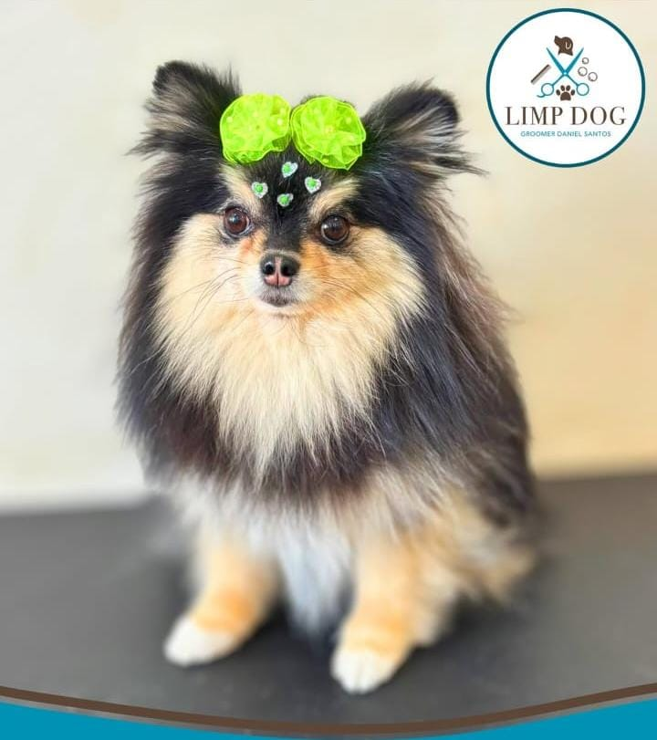
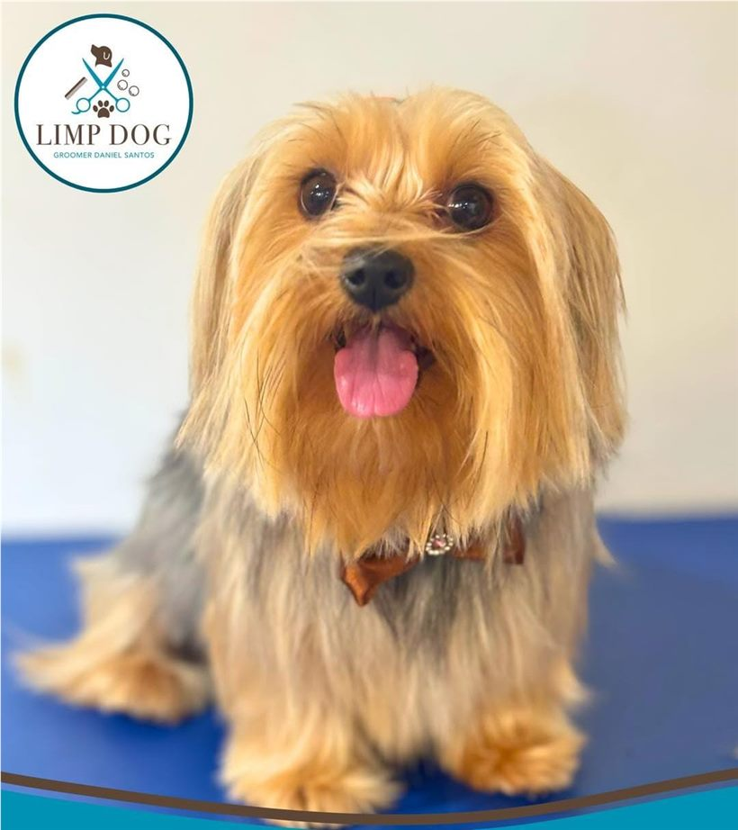
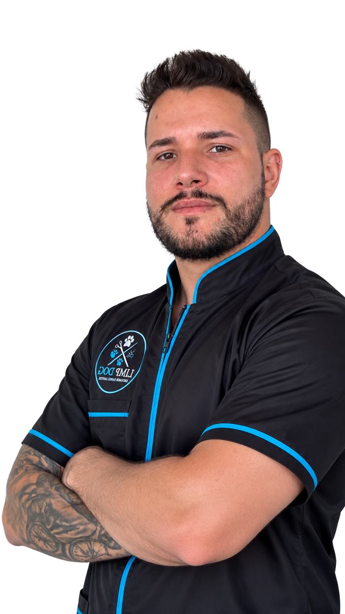
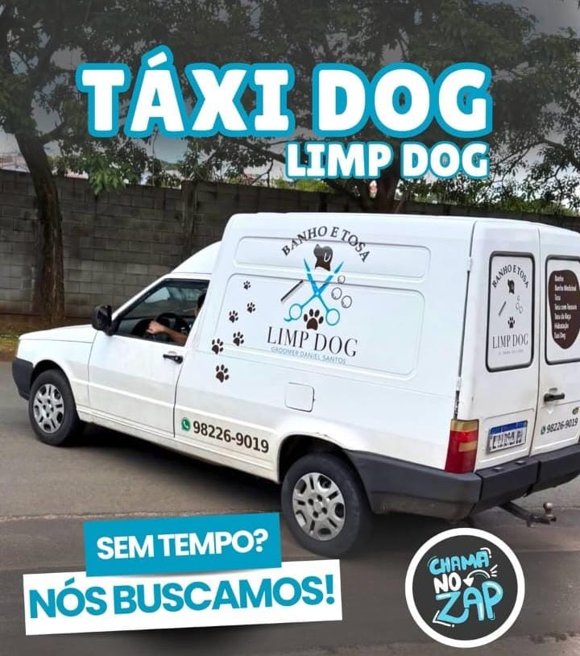

BANHO
Higienização e cuidado para deixar o pet limpo, cheiroso e bem cuidado.
Na Limp Dog, cada cão recebe um atendimento dedicado, com serviços de banho e tosa realizados com atenção, carinho e cuidado em cada detalhe.

Na Limp Dog, banho e tosa são momentos de cuidado. Cada atendimento é realizado respeitando as características, a pelagem e as necessidades de cada cão, buscando proporcionar conforto, higiene e um resultado bonito e bem cuidado.

Cuidar.Um atendimento atento, acolhedor e pensado para cada pet.
Serviços pensados para higiene, conforto e um resultado bonito e bem cuidado.
Higienização e cuidado para deixar o pet limpo, cheiroso e bem cuidado.
Cuidados em regiões específicas para auxiliar na higiene e no conforto do pet.
Cuidado especial para a pelagem, ajudando a manter um aspecto bonito, macio e bem tratado.
Tosa realizada de acordo com as características do pet e o resultado desejado.
Um estilo de tosa que proporciona aparência delicada e acabamento uniforme.
Tosa considerando as características estéticas e o padrão de cada raça.
Alguns dos pets que já passaram pelos cuidados da Limp Dog.





Daniel Santos é o profissional responsável pelos serviços de tosa da Limp Dog. Seu trabalho é voltado ao cuidado individual de cada pet, considerando características como raça, porte, tipo de pelagem e o estilo de tosa desejado.

Conte também com o serviço de Táxi Dog da Limp Dog para facilitar a rotina e o cuidado com o seu pet.
Consultar Táxi Dog“O Dani e seu pessoal são nota 10, cuidam muito bem dos pets.”
“O melhor banho e tosa de Limeira e região, sem dúvidas.”
“Amo o tratamento e cuidado que dão para os meus pets!!!”
Agende um horário na Limp Dog e fale diretamente pelo WhatsApp.
Agendar agora pelo WhatsApp